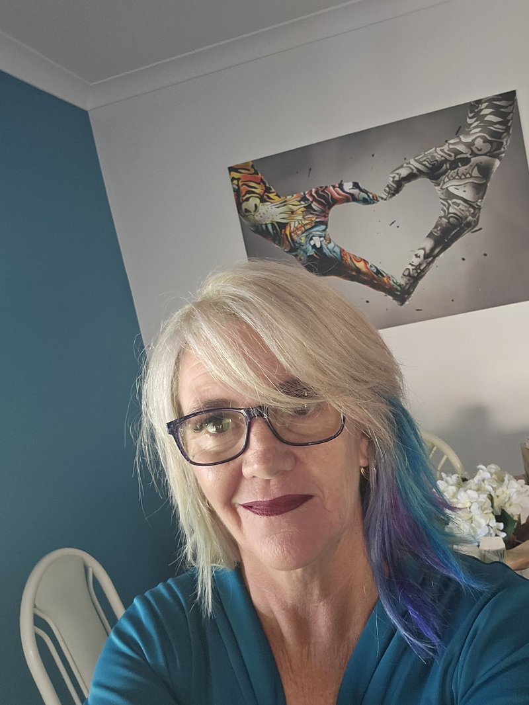
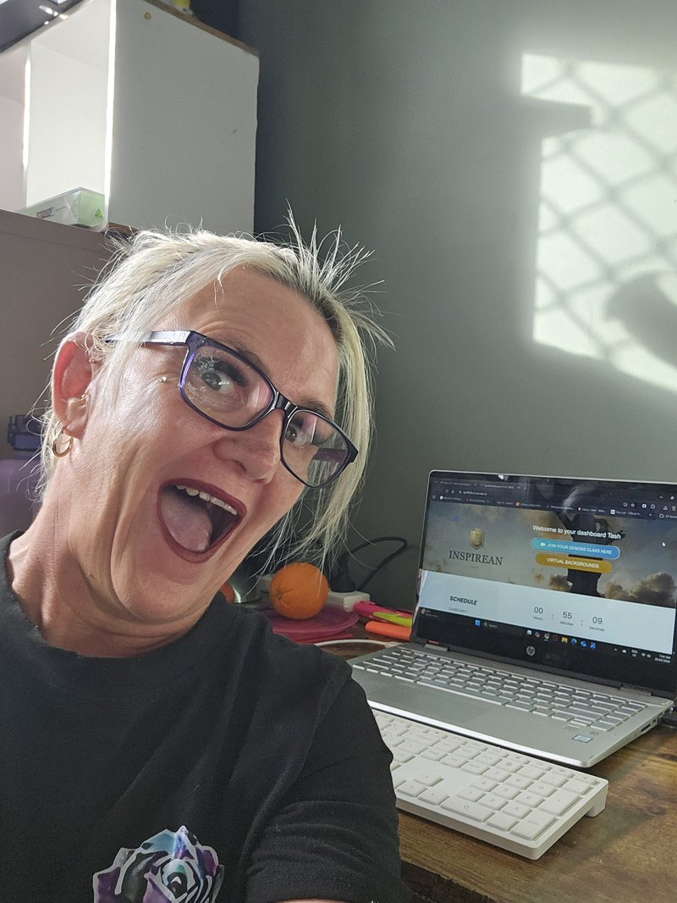
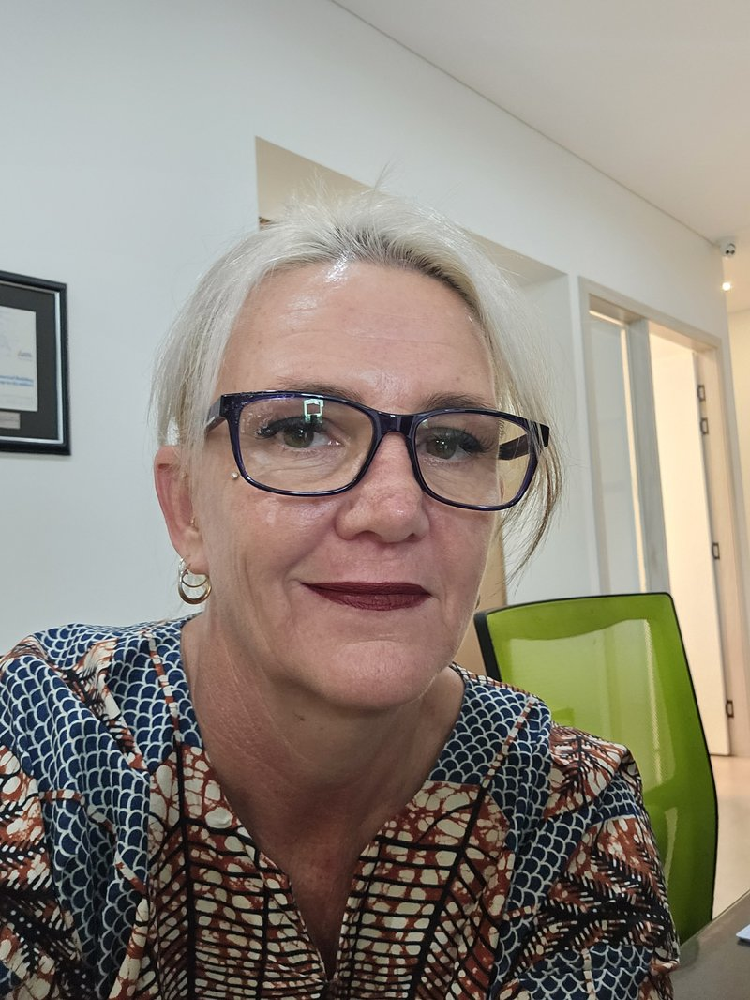
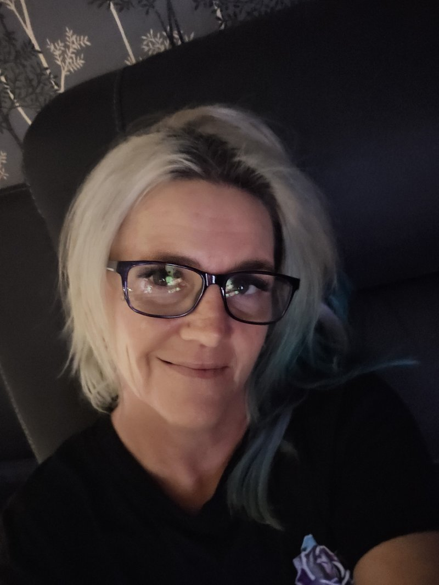

I've spent years working inside health practices. I see the patients come in. I see them come back. And I started asking - what if we could support better outcomes before they even reach the treatment room?
As a medical receptionist and holistic wellness advocate, I sit at the intersection of clinical care and whole-body health. I see what works. I see what's missing. And I know the gap between treatment and true wellness is often simpler than we think.
I help health practices explore how environmental wellness, daily habits, and simple changes can support better outcomes for patients - both in clinic and along their entire treatment pathway.
"What if the simplest thing in your clinic could make the biggest difference?"
A 30-minute session exploring the overlooked environmental and wellness factors that impact patient recovery and clinical experience. Designed for practice managers, allied health professionals, and anyone who wants practical insights without the sales pitch.
Register Now >A hands-on review of your clinical environment - the things your patients experience from the moment they walk in. I'll identify simple, practical changes that can elevate outcomes and patient satisfaction. No obligations.
Book a Free Audit >For practices ready to go deeper. I work alongside your team to integrate holistic wellness into your clinical environment and patient recommendations - creating a practice that genuinely supports the whole person.
Let's Talk >better environment. better outcomes. better care.
Patients receive excellent clinical care - but what happens between appointments often determines their outcome. The daily habits, the home environment, the basics that get overlooked. That gap is where real change lives.
Patients notice when a practice goes beyond the standard. The quality of what they experience in your space sends a message about how much you care about their whole-body wellbeing - not just their appointment.
What patients take home matters. Their daily environment, their routines, the foundations of health that sit underneath their treatment plan. Practices that support the whole pathway see better long-term results.
In a crowded market, the practices that stand out are the ones that genuinely care about the whole person. Holistic wellness integration isn't a gimmick - it's the future of patient-centred care.
I'm not coming at this from the outside. I'm a medical receptionist. I see patients every day. I understand the clinical environment, the time pressures, and the reality of running a practice.
I also live the wellness journey personally - as a mum of two neurodivergent boys, navigating perimenopause, and constantly researching what actually makes a difference for our family's health.
I'm not here to sell you anything. I'm here to open a conversation about something most practices haven't thought about yet - and let you decide if it's worth exploring.
Whether you want the free guide, a water test for your practice, or just a conversation about what's possible - I'd love to hear from you.
Get In Touch